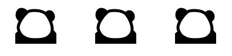
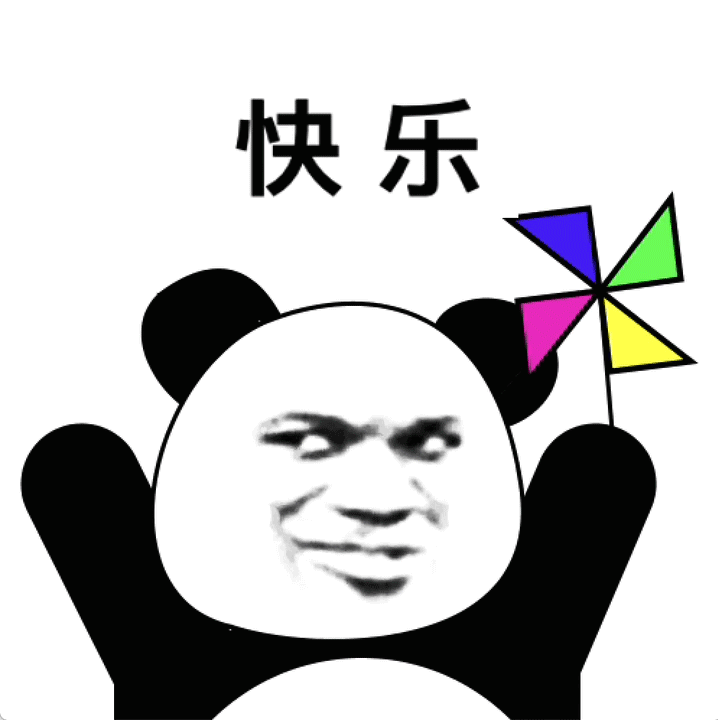
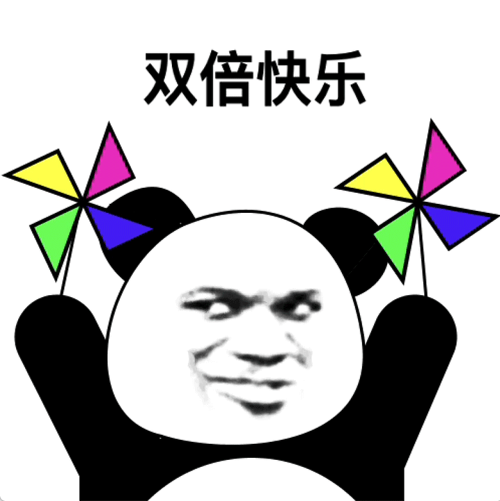
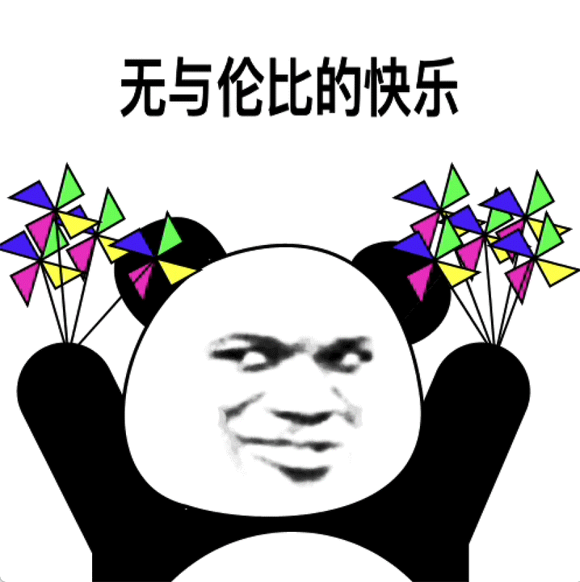
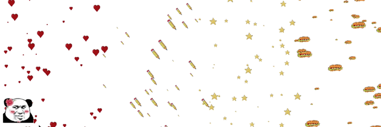
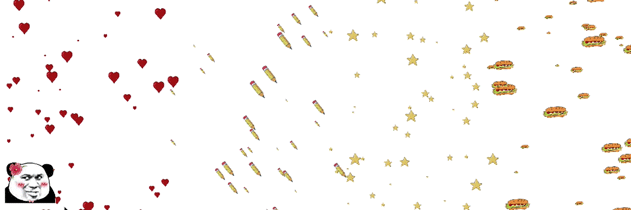

I don’t pursue to be happy.
Instead, I pursue not to be unhappy.
Is there one thing that makes people happy when they get it,
the more they get, the happier they become,
but unhappy when they lose it?
Are those who keep pursuing happiness really happy anyway?

 
